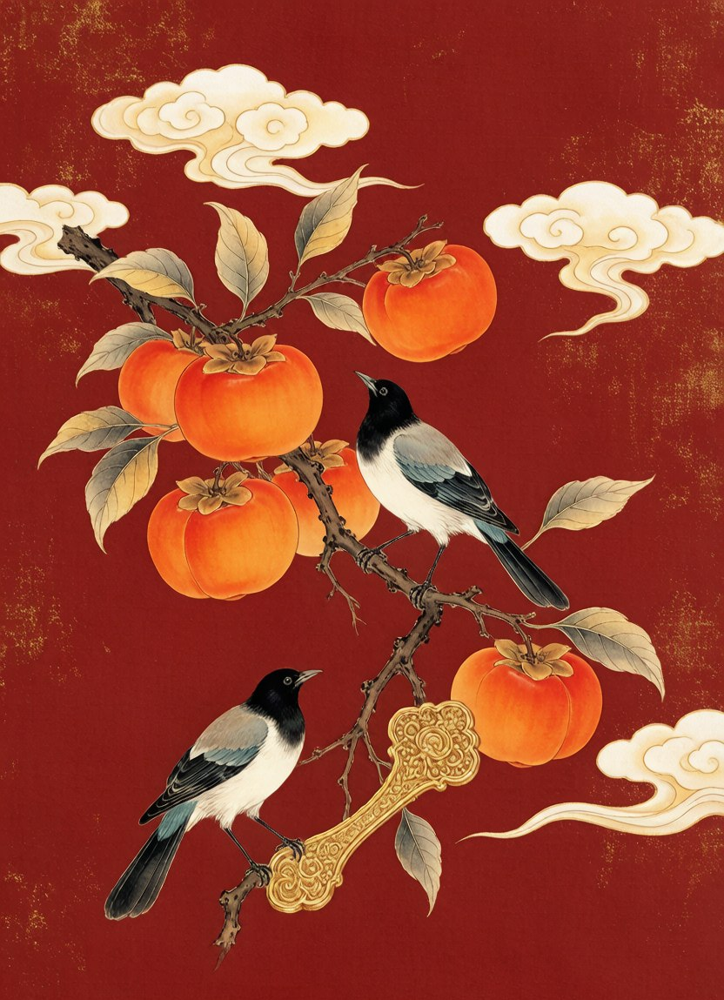
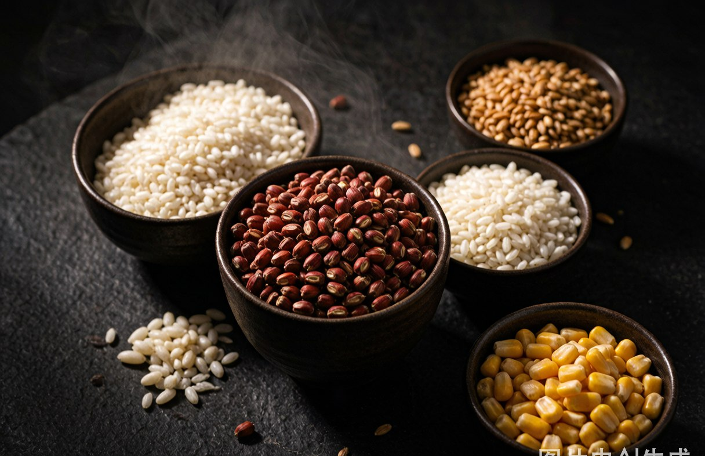
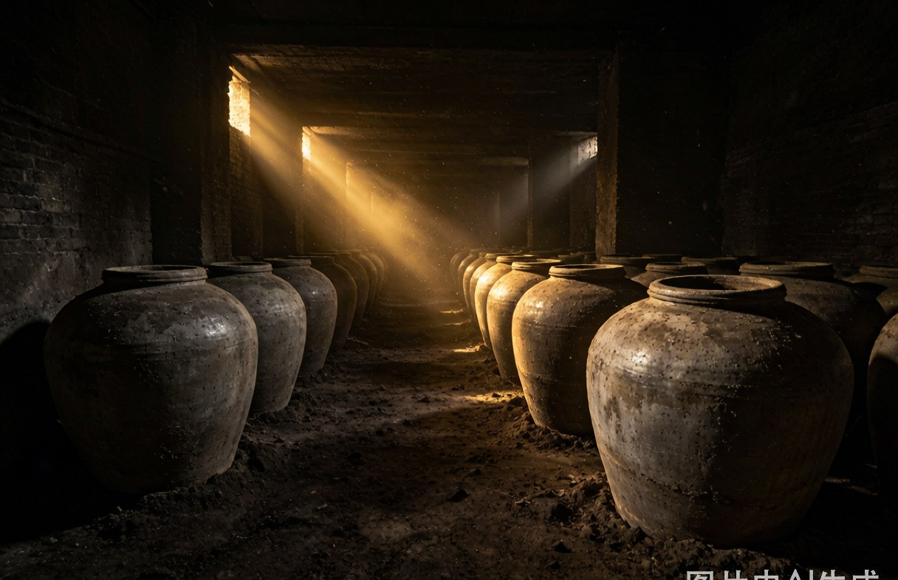
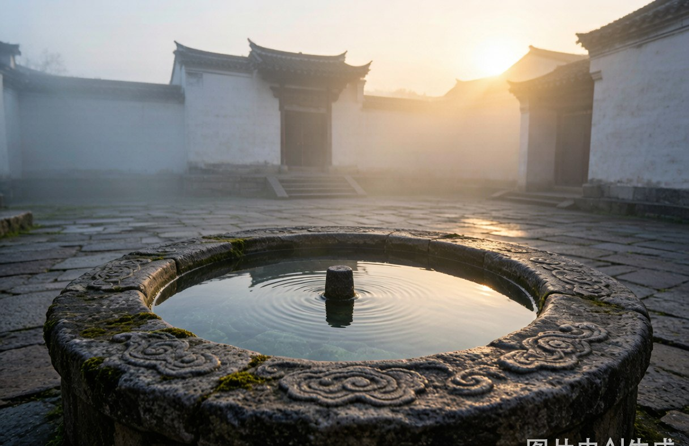
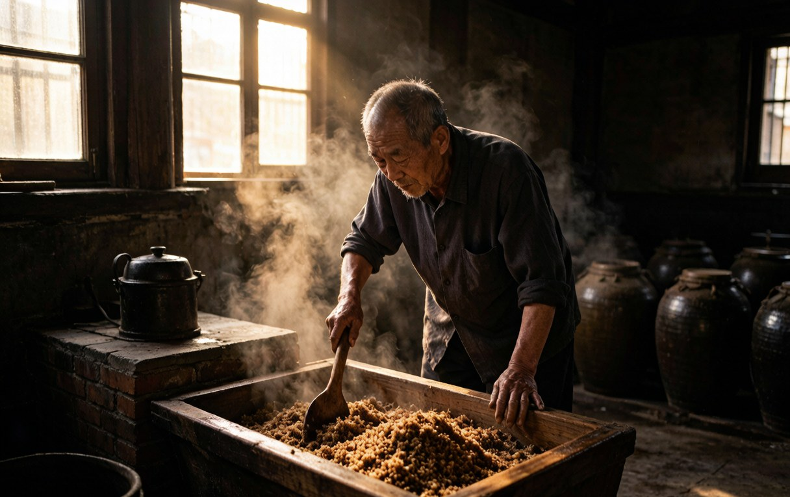
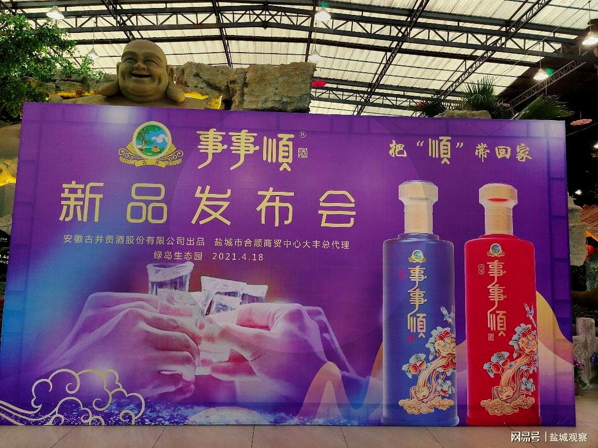
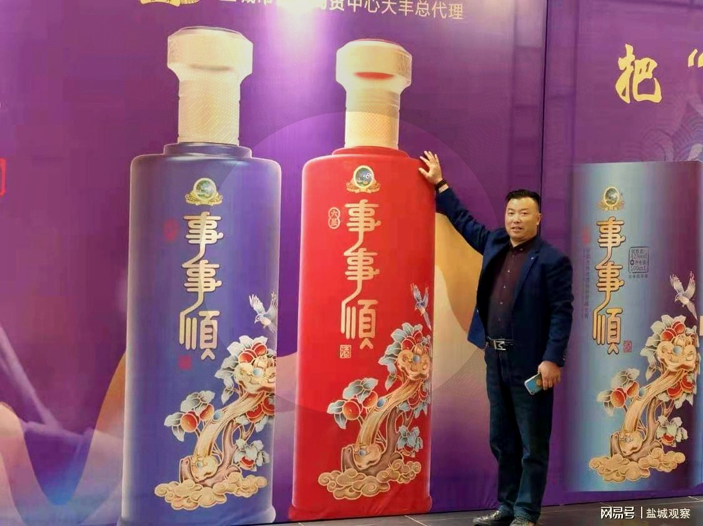
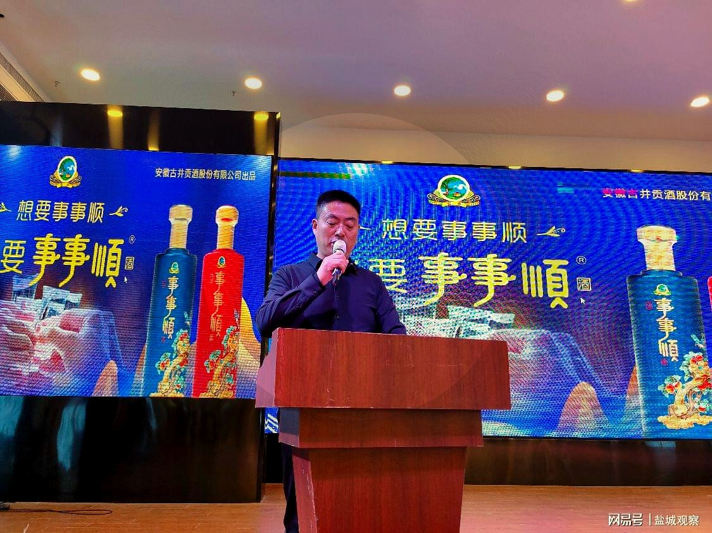

求学与启程
敬十年用心，也祝前路开阔。
古井贡酒 · 年份原浆之源
九酝春酒进献汉献帝
贡酒之源
《九酝酒法》世界现存最古老
蒸馏酒酿造方法
古井贡酒酿造技艺
国家级非物质文化遗产
终端体验店遍布皖苏浙
迈向全国
BRAND STORY
东汉建安三年，曹操将家乡亳州所酿「九酝春酒」进献汉献帝，赞为「佳酿」——这是古井贡酒之源，也是事事顺酒的根脉。两千年后，一位名叫王亚洲的亳州青年，以四万元押注「事事顺」商标，依托古井贡酒的优质基酒，把中国人最朴素的心愿——「事事顺」，酿进了一杯浓香里。
曹操将家乡亳州产的「九酝春酒」和酿造方法进献给汉献帝刘协——这是中国有文字记载的最早的酿酒方法，也是中国最早的标准化产品。
明代万历年间，沈阁老以此酒进献万历皇帝，贡酒之名再续。
清末，亳州人姜桂题将家乡美酒进献慈禧太后，宫廷盛誉。
自此连续4次蝉联全国白酒评比金奖，被誉为「老八大名酒」和「酒中牡丹」。
古井贡酒入选国宴用酒，以国礼之姿款待四海宾朋。
自上海世博会后五次携手世博会，向全世界展示中国白酒灿烂文化，绽放大国品牌风采。
古井贡酒酿造遗址——北魏古井、宋代古井、明清窖池群、明清酿酒遗址，被列为全国重点文物保护单位。
作为世界上现存最古老的蒸馏酒酿造方法，获吉尼斯世界纪录官方认证——中国酒业的第一个吉尼斯世界纪录。
古井贡酒酿造技艺入选第五批国家级非物质文化遗产名录。
2024年4月，古井贡酒荣获第三批「中华老字号」，千年贡酒历久弥新。
「我们卖的不是酒精饮料，
—— 事事顺品牌创始人 王亚洲
而是情感寄托和文化认同。」
荣誉等身
只为一杯好酒HONORS
这家企业不习惯把精力放在宣传上——
更多的时间、人力与物力，都投进了生产线上的品质打磨。
连续四届全国评酒会金奖，「酒中牡丹」
入选国宴，以国礼之姿款待宾朋
五次携手世博会，展示中国白酒文化
北魏古井 · 宋代古井 · 明清窖池群 · 明清酿酒遗址
《九酝酒法》——中国酒业第一个吉尼斯纪录
古井贡酒酿造技艺入选国家级非物质文化遗产
荣获第三批「中华老字号」称号

事事顺图腾
柿子 × 如意 × 喜鹊CULTURE
事事顺图案，是柿子与如意的结合，寓意事事如意；
喜鹊报喜，象征家顺、国顺、事事顺。
我们把这份祝福，分赠给人生的三场大考。
十年寒窗，一朝题名。「金榜题名」升学宴定制酒，单月销量破百万，见证万千学子的圆梦时刻。
商海纵横，贵人同行。商会宴请、事业庆功，一杯事事顺，敬通往成功路上满怀感恩的人。
阖家团圆，福寿绵长。婚寿宴席、佳节团圆，「吾家有喜，就喝事事顺」。
FOUR FLAGSHIPS
顺一年
一年三百六十五天，愿日子有序、心里有光。
浓香型白酒 · 42%vol · 500ml
产品包装、酒精度与净含量以实物及官方渠道信息为准。
CRAFTSMANSHIP
千年古法，五粮精华，一杯浓香的来处

集高粱的清香、糯米的甘醇、大米的香甜、玉米的浓香、小麦的甘苦为一体，纯粮酿造。

酒香还需窖池老。桃花开时制曲，花凋曲成，古老窖池孕育世代风华。

古井无极之水富含微量元素，酿酒尤佳，千年水脉孕育「香纯似幽兰」。

128 PROCESSES
20年工龄以上的老师傅精心酿造，历经128道手工工序。
天人共酿，传世浓香。

THE MOMENTS THAT MATTER
敬十年用心，也祝前路开阔。
人到齐，话慢慢说，日子便有了温度。
有家可回，有人可念，就是生活的顺意。
敬一路相扶的人，也敬彼此成全的情谊。
NEWS

古井事事顺酒大丰新品品鉴及上市发布会在绿岛生态园举行，三百余位嘉宾共品古井的醇厚与芳香，「把顺带回家」。

事事顺红瓶、蓝瓶巨型模型惊艳亮相，安徽古井集团与盐城市合顺商贸中心携手，共拓区域市场。

据腾讯新闻报道，事事顺在亳州「家喻户晓」——从商贩推车到大小酒楼，「国人谁不期盼事事顺」。
PARTNERSHIP
古井贡酒品牌背书 · 全渠道运营支持 · 诚邀全国经销商共赢
合作洽谈请通过正规渠道联系品牌方，谨防假冒。